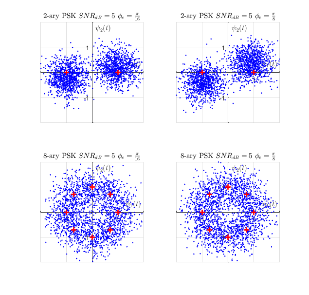
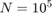
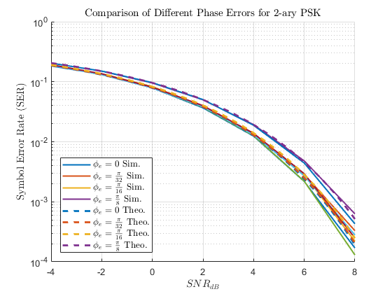
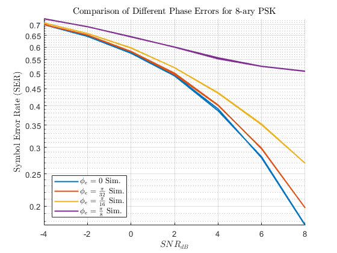
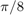
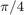

Contents
David Dobbie : 300340161
ECEN 310 / ENGR 440 Communications Engineering Lab 1 - Bit Error Rate
clear all; clc;
Q2:
set(0, 'defaulttextInterpreter','latex') M_vect = [2 8]; phi_err = [pi/16 pi/8]; SNRdB = 5; Es = 1; N = 1e3; iter =1;
2a
Here we examine the performance of a MPSK system to varying amounts of phase error. We see that as the phase error is increased, the distribution of the sent points rotate around the origin. This is exacerbated for 8PSK as the phase error directly pushes the sent symbols to the wrong decision points. This is because PSK only makes the differentation of each received symbol with its phase, not its energy.
figure(1) for M_indx = 1:length(M_vect) M = M_vect(M_indx); constel = exp((j * 2* pi * (0:M-1))/ (M)); for phiIndx = 1:length(phi_err); phi = phi_err(phiIndx); No = Es/db2pow(SNRdB); s = randsrc(N,1,constel); % get rnd symbols, tx n = sqrt(No/2)*complex(randn(N,1),randn(N,1)); % noise samples r = s * exp(j*phi) + n; % rx for indx = 1:N %returns decision point closest to the received message [dmin, const_indx] = min(abs(r(indx) - constel)); sest(indx) = constel(const_indx); end % plotting system subplot(2,2,iter) hold on plot(real(r)', imag(r)', 'b.') plot(real(constel)', imag(constel)', 'r+', 'linewidth', 2, 'markersize' , 8) hold off ax = gca; ax.XAxisLocation = 'origin'; ax.YAxisLocation = 'origin'; axis([-2 2 -2 2]) grid on xlabel('$ \psi_1 (t)$') ylabel('$ \psi_2 (t)$') if phiIndx == 1 title([num2str(M) '-ary PSK $SNR_{dB}=5$ $\phi_e = \frac{\pi}{16} $']) end if phiIndx == 2 title([num2str(M) '-ary PSK $SNR_{dB}=5$ $ \phi_e = \frac{\pi}{8} $']) end iter = iter + 1; end end
2b,2c
We see with the SER plot that the higher the phase error, the more higher the SER is. This matches closely with the theoretical SER for them. Each Monte Carlo simulation is generated with  symbols.
% SER error rates: SNRdBAxis = -4:2:8; SNRdBAxis_theo = -4:0.25:8; phiAxis = [0 pi/32 pi/16 pi/8]; Ns = 1e5; figure(2) generalSERPlotGen(SNRdBAxis, SNRdBAxis_theo, phiAxis, Ns, 2) figure(3) generalSERPlotGen(SNRdBAxis, SNRdBAxis_theo, phiAxis, Ns, 8) % get SER function % Inputs: M - number of decision points; Ns - number of data points % simulated; SNRdB - SNRdB being tested; phaseError for phase error % introduced % Outputs: SER function SER = getSER(M, Ns, SNRdB, phaseError); constel = exp((j * 2* pi * (0:M-1))/ (M)); Es = 1; No = Es/db2pow(SNRdB); s = randsrc(Ns,1,constel); % get rnd symbols, tx n = sqrt(No/2)*complex(randn(Ns,1),randn(Ns,1)); % noise samples r = s * exp(j*phaseError) + n; % rx sest = zeros(Ns,1); for indx = 1:Ns %returns decision point closest to the received message [dmin, const_indx] = min(abs(r(indx) - constel)); sest(indx) = constel(const_indx); end SER = (nnz(s-sest)/Ns); end % % Give an SER with a set phase error % to compare % % function [SERtheo SERresults] = generalSERPlotGen(SNRdBAxis, SNRdBtheo_axis, phiAxis, Ns, M); SERresults = zeros(length(SNRdBAxis), length(phiAxis)); % loop through and test different M-ary schemes PSK for p = 1:length(SNRdBAxis) for q = 1:length(phiAxis) SNRdB_val = SNRdBAxis(p); phi_val = phiAxis(q); SERresults(p,q) = getSER(M, Ns, SNRdB_val, phi_val); end end if M == 2 %only make theoretical for BPSK SER_theo = zeros(length(SNRdBtheo_axis), length(phiAxis)); % loop through and test different theoretical M-ary schemes PSK for p = 1:length(SNRdBtheo_axis) for q = 1:length(phiAxis) SNRlin_val = db2pow(SNRdBtheo_axis(p)); phi_val = phiAxis(q); argu = cos(phi_val)*sqrt( ( 2*SNRlin_val)); SER_theo(p,q) =qfunc(argu); end end end % plot SER results hold on grid on ax = gca; semilogy(SNRdBAxis ,SERresults,'linewidth', 1.5) ax.ColorOrderIndex = 1; if M == 2 semilogy(SNRdBtheo_axis ,SER_theo,'--','linewidth', 2) end set(ax,'yscale','log') hold off xlabel("$ SNR_{dB} $") ylabel("Symbol Error Rate (SER)") str = sprintf('Comparison of Different Phase Errors for %c-ary PSK', (num2str(M))); title(str); if M == 2 leg_str = {'$\phi_e = 0$ Sim.','$\phi_e = \frac{\pi}{32}$ Sim.', ... '$\phi_e = \frac{\pi}{16}$ Sim.','$\phi_e = \frac{\pi}{8}$ Sim.', ... '$\phi_e = 0$ Theo.','$\phi_e = \frac{\pi}{32}$ Theo.', ... '$\phi_e = \frac{\pi}{16}$ Theo.','$\phi_e = \frac{\pi}{8}$ Theo.'}; else leg_str = {'$\phi_e = 0$ Sim.','$\phi_e = \frac{\pi}{32}$ Sim.', ... '$\phi_e = \frac{\pi}{16}$ Sim.','$\phi_e = \frac{\pi}{8}$ Sim.'}; end lgnd = legend(leg_str,'FontSize', 10); lgnd.Location = 'southwest'; set(lgnd,'Interpreter','latex') return; end 
2d
We see that for 8PSK, the error levels out at a phase error of . This is due to the phase error being larger than the mid point of each phasdecision point for each ;point. Each point is separated by  radians. That means if there is a bias of more than , the mean of the sent symbols will be in the wrong decision area. Increasing SNR will not lead to a decrease in error because of this.